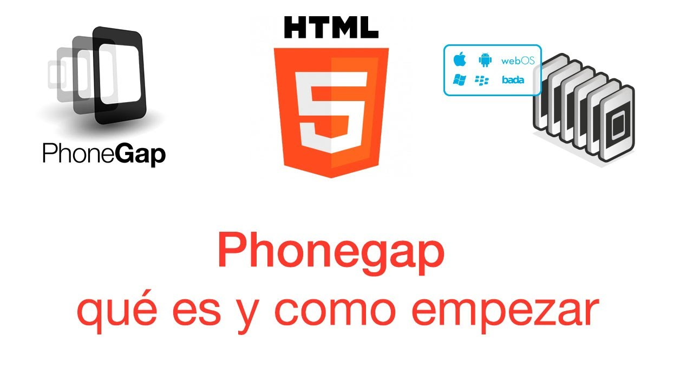

Que es Phone Gap
ContenidoPhoneGap es un paquete de librerías que permite empaquetar aplicaciones HTML5 de manera que puedan ser usadas como apps para móviles o Web Apps. Te explicamos los detalles más relevantes sobre esta versátil solución que nos permitirá dar el salto fácilmente al desarrollo de aplicaciones multidispositivo, aunque no podemos olvidar que también tiene sus limitaciones.
Jaime Bastidas Paez 2018